Shichinohe
Shichinohe · Aomori
Shichinohe
Highlighted on the Aomori map.
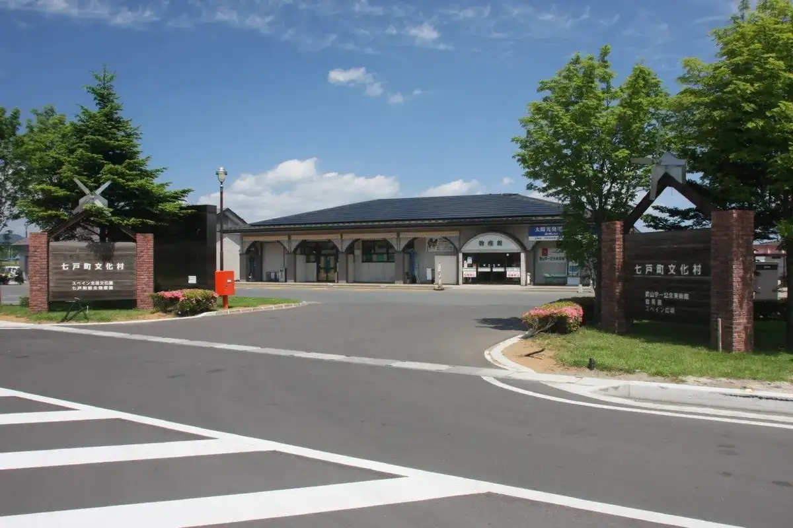
Stay
ピースワン七戸十和田
Piisuwan Shichinohe Towada
Dining
居酒屋 ういち
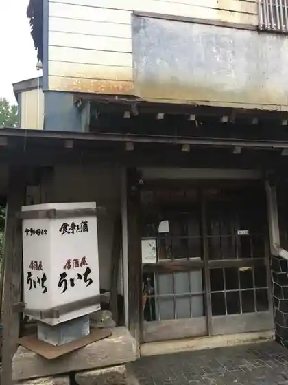
Izakaya Uichi
ファミリーマート みちのく天間林店

Famiriimaato Michinoku Tenmabayashi Mise
天間屋
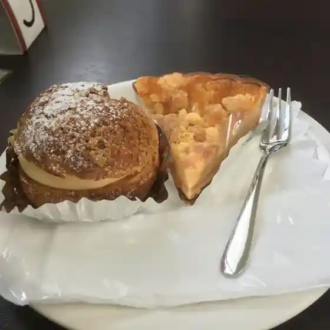
Tenma Ya
和こめ屋
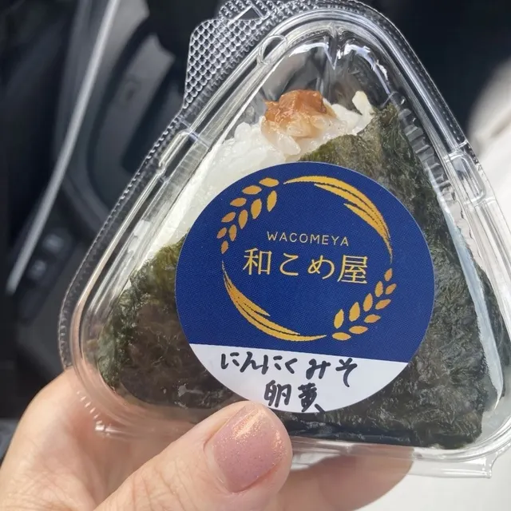
Wa Kome Ya
七戸町観光交流センター 喫茶店
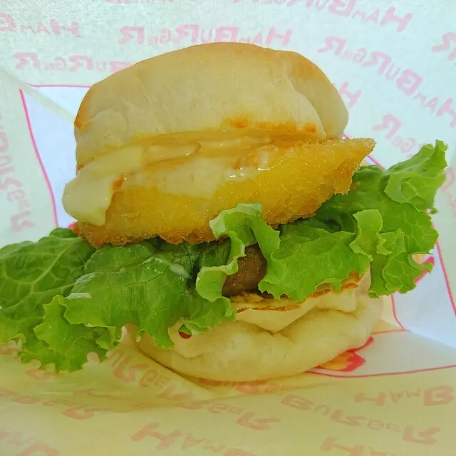
Shichinohe Machi Kankou Kouryuu Sentaa Kissaten
居酒屋 凪や
Izakaya Nagi Ya
和風レストラン まるまつ イオン七戸店
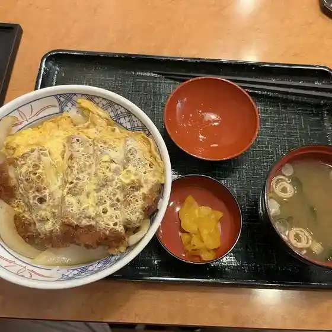
Wafuu Resutoran Marumatsu Ion Shichinohe Mise
パン工場 七戸十和田駅前店
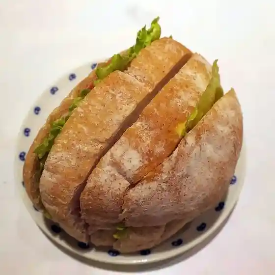
Pan Koujou Shichinohe Towada Ekimae Mise
寿司御食事処 まきば
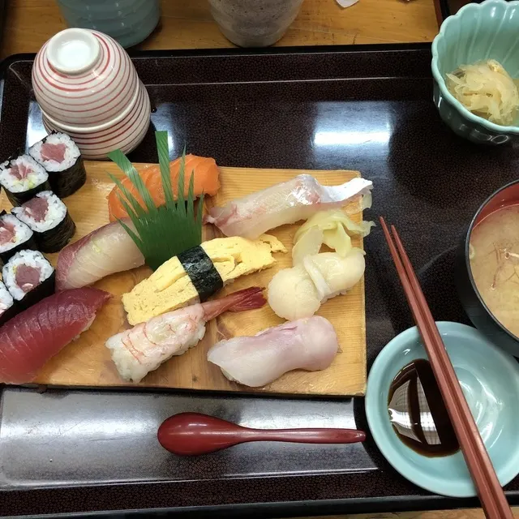
Sushi Mike Koto Tokoro Makiba
手打ちそば処 てっちゃんの店
Teuchi Chisoba Tokoro Tetchanno Mise
七戸町観光交流センター
Shichinohe Machi Kankou Kouryuu Sentaa
天間林仕出しセンター
Tenmabayashi Shidashi Sentaa
キーズカフェ 七戸十和田店
Kiizukafe Shichinohe Towada Mise
食堂 赤牛
Shokudou Akaushi
愛生堂
Aisei Dou
喫茶店 モリタ
Kissaten Morita
タベルナ
Taberuna
盛田庄兵衛
Morita Shoubee
そば茶房といち
Soba Sabou Toichi
天間林ドライブイン
Tenmabayashi Doraibuin
チェンマイ
Chenmai
交流館
Kouryuu Kan
ナラビ
Narabi
わが家キッチン 居酒屋 絵里
Waga Ie Kitchin Izakaya Eri
Sights
Roadside Station Shichinohe
Roadside Station Shichinohe sells local sake, souvenirs, and fresh produce from Shichinohe Town.
Tenmabayashi Onsen
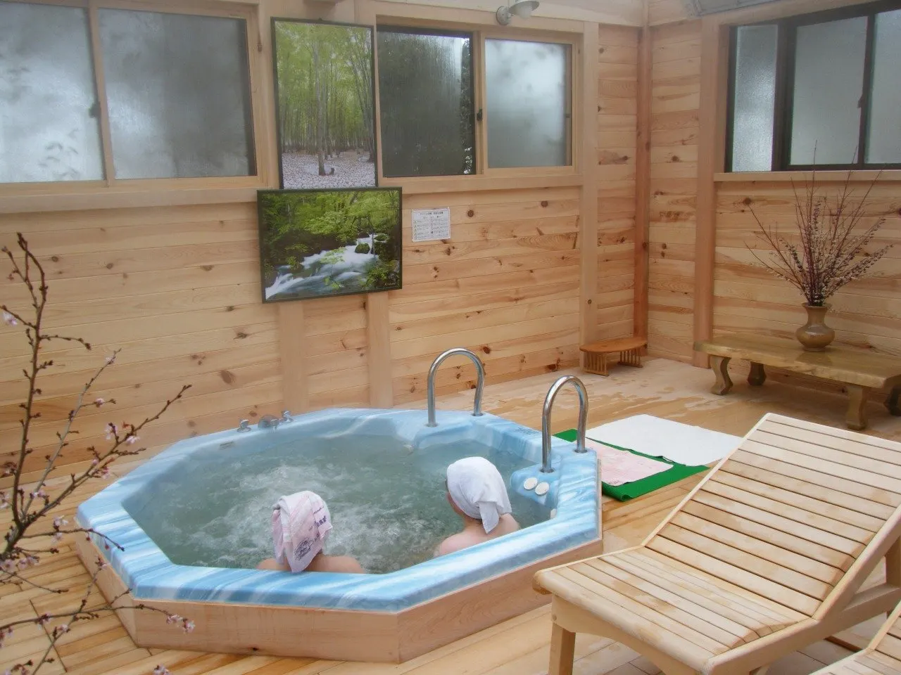
Free-flowing alkaline hot spring opened in 1980 near the town office.
Fukuro no Yu
Sodium-chloride hot spring with sauna, family baths, childcare room and fitness facilities.
Higashi-Hakkoda Onsen
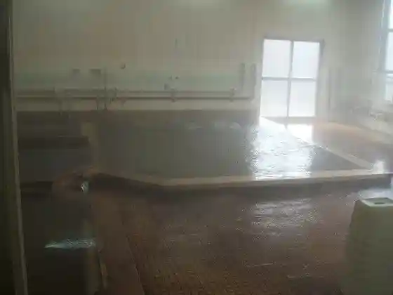
Free-flowing hot spring by Shichinohe-Towada Station, the only one in town offering lodging.
Sakata Onsen
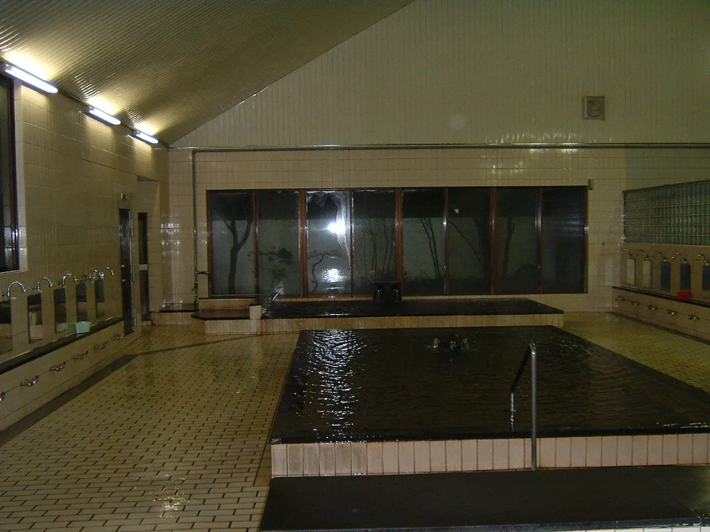
Showa-style free-flowing hot spring cleaned and refilled daily.
Higashi-Hakkoda Rose Country
Rose farm selling roses, bouquets and dried flowers below market prices.
Former Nanbu Jukan Railway Rail Bus
Preserved rail buses of a line closed in 2002, with rides offered each Golden Week.
Sumomozawa Onsen
Free-flowing 41.7°C hot spring on the Shichinohe-Tohoku border, loved by hot spring fans.
Asunaro Onsen
Free-flowing alkaline hot spring near the old Shichinohe Station and Route 4.
Seiganji Temple Gate
Town cultural property: the former Shichinohe Castle gate, moved here in 1873, with guardian statues.